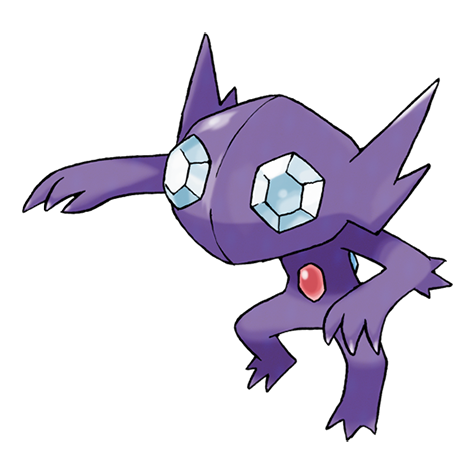
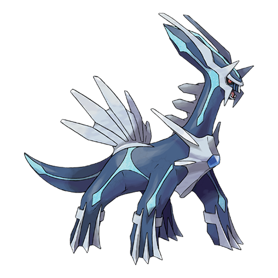
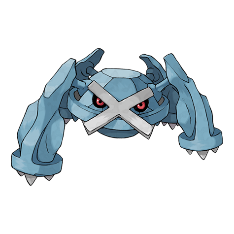
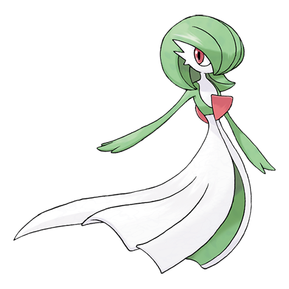

天気を読み込み中…
※ゲーム内の天気と違うことがあります
最新の巣: 東京の巣 10/22(木)〜11/5(木) を開く
東京の巣（期間ごと）
攻略・まとめ
- ⭐今出ているダイマックス（★1〜★3）
- 📋ダイマックス 育成の優先順位（10/17〜）
 ダイマックス ユクシー 攻略（10/24 土）
ダイマックス ユクシー 攻略（10/24 土）
ダイマックス ヤミラミ 攻略（10/26 月） メルタン・メルメタル 育成プラン（11/9〜）
メルタン・メルメタル 育成プラン（11/9〜）- ⚔️ワイルドウィーク2026（11/9～11/13）ダイマックスまとめ
 ダイマックス レジスチル 攻略（11/11 水）
ダイマックス レジスチル 攻略（11/11 水） ダイマックス レジドラゴ 攻略（11/12 木）
ダイマックス レジドラゴ 攻略（11/12 木） ダイマックス ラティアス 攻略（11/13 金）
ダイマックス ラティアス 攻略（11/13 金） ダイマックス ラティオス 攻略（11/13 金）
ダイマックス ラティオス 攻略（11/13 金）
ダイマックス ディアルガ 攻略（11/14 土）
メタグロス育成プラン（ディアルガ戦 11/14 用） ダイマックス パルキア 攻略（11/15 日）
ダイマックス パルキア 攻略（11/15 日）
サーナイト育成プラン（パルキア戦 11/15 用）- ⏰締め切り・やることまとめ
 サカキ対策（シャドウゼクロム）
サカキ対策（シャドウゼクロム）- 📝ChatGPT 申し送りまとめ
- ✨キラチャームの仕様
- 🧰手持ちのダイマックス（育成メモ）
- 💰課金の最適解（レイドパス・マックス粒子・ダイきのこ）
- 🗺️ワイルドエリア2026 ダイマックス攻略（ディアルガ・パルキア）